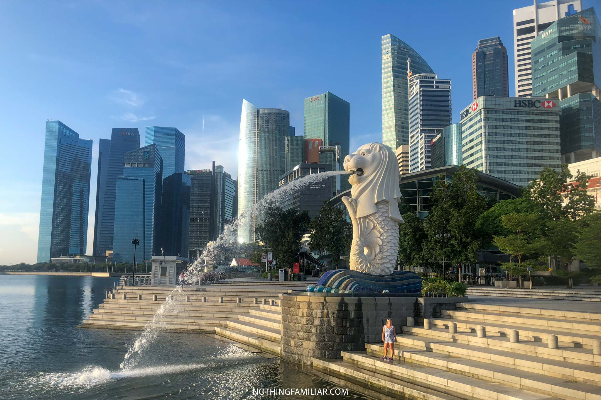

| The Gardens By The Bay
Garden of Wonders |
 |
| The Merlion Park The official mascot of Singapore, Merlion. It is depicted as a mythical creature with the head of a lion and the body of a fish. Being of prominent symbolic nature to Singapore and Singaporeans in general. |
 |
| The Singapore Singapore Flyer, one of the largest observation wheels in the world. Marvel at the breathtaking views of Marina Bay from the Singapore Flyer's capsules. |
 |